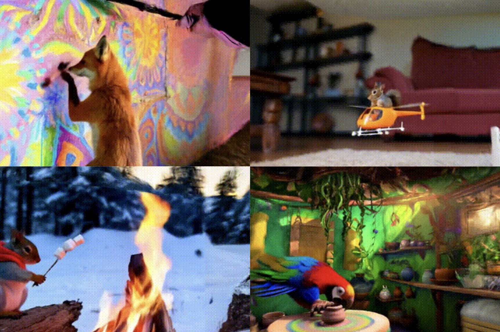
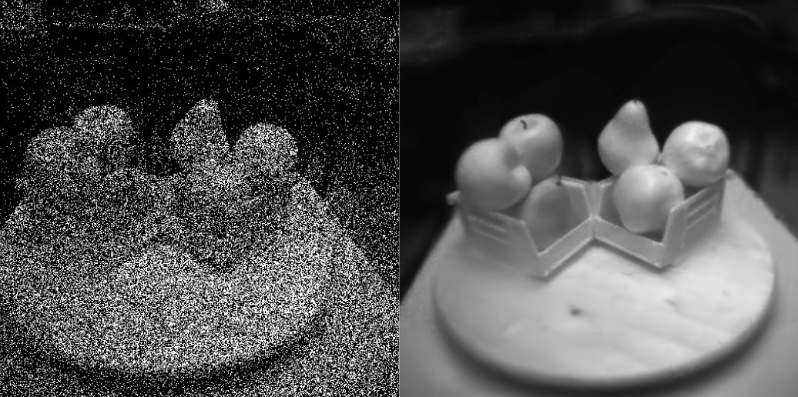

{kind=link}
ResearchI'm interested in computer vision, deep learning, generative AI, and image processing. Most of my research is about inferring the physical world (shape, motion, color, light, etc) from images, usually with radiance fields. Some papers are highlighted. |
|  |
PaintScene4D: Consistent 4D Scene Generation from Text Prompts
Vinayak Gupta, Yunze Man, Yuxiong Wang Under Review. Project Page / Paper / Project Page / Paper / Code / Project Page / Bib |
|  |
PhotonSplat: Splatting Photon for Scene Reconstruction with High-Speed Camera Captures
Sai Sri Teja Kuppa*, Sreevidya Chintalapati*, Vinayak Gupta*, Mukund Varma T, Haejoon Lee, Aswin Sankaranarayanan, Kaushik Mitra, Under Review. Project Page / Project Page / Paper / Code / Project Page / Bib |

|
GANESH: Generalizable NeRFs for Lensless Imaging
Rakesh Raj*, Akshat Kaimal*, Badhri Narayanan KV*, Vinayak Gupta, Rohit Chowdhary, Chandrakala S, Kaushik Mitra, Under Review. Project Page / Paper / Code / Project Page / Paper / Code / Project Page / Bib |

|
GAURA: Generalizable Approach for Unified Restoration and Rendering of Arbitrary Views
Vinayak Gupta*, Girish Rongali*, Mukund Varma T*, Ayush Tewari, Kaushik Mitra, Under Review. Project Page / Paper / Code / Project Page / Bib |

|
GSN: Generalisable Segmentation of Neural Radiance Fields
Vinayak Gupta, Rahul Goel, Dhawal Sirikonda, P J Narayanan, Under Review. Project Page / Paper / Code / Project Page / Bib |

|
U2NeRF: Unsupervised Underwater Image Restoration and Neural Radiance Fields
Vinayak Gupta*, Manoj S* Mukund Varma T* Kaushik Mitra Under Review. Project Page / Paper / Code |
Academic Service |
|